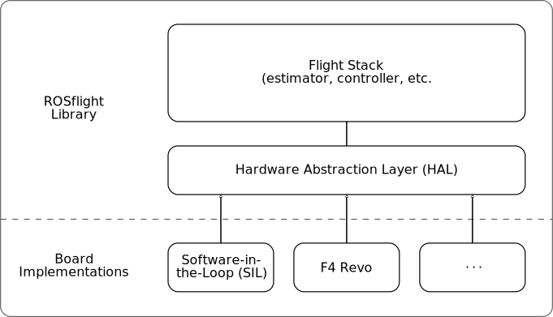
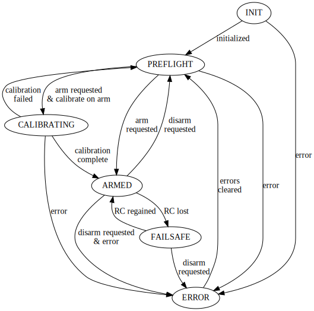

Code Architecture¶
The firmware is divided into two main components: the ROSflight library, and a collection of board implementations. This division is intended to allow the same core flight code to run on any processor or platform, either an embedded flight controller (such as the Naze32 or Revo) or a desktop environment for a software-in-the-loop (SIL) simulation. The interface between these two components is called the hardware abstraction layer (HAL). This architecture is illustrated in the following diagram:

ROSflight Core Library¶
The ROSflight library consists of all the code in the include and src directories of the firmware repository.
This includes the code for what is termed the "flight stack," which consists of the core components (such as the estimator, controller, state manager, etc.) required for flight.
It also includes the interface definition for the hardware abstraction layer, which is defined by the abstract Board class in include/board.h.
The communications link (MAVLink) is also abstracted, with the interface defined by the CommLink class in include/comm_link.h.
External libraries are contained in the lib folder.
Board Abstraction¶
The hardware abstraction implementations are contained in the board directory, organized in subdirectories according to the hardware driver layer.
The boards/airbourne directory uses drivers for boards using the STM32F4 processor, while the boards/breezy directory uses drivers for STM32F1 processors.
Each board implementation is required to provide an implementation of the hardware abstraction layer interface, which is passed by reference to the flight stack.
The Revo implementation in the boards/airbourne shows how this is done for an embedded flight controller.
Examples of board implementations for SIL simulation are found in the rosflight_firmware and rosflight_sim ROS packages available here.
The flight stack is encapsulated in the ROSflight class defined at include/rosflight.h.
This class contains two public functions: init() and run().
Its constructor requires two arguments: an implementation of the Board interface, and an implementation of the CommLink interface.
Each board implementation is required to:
- Provide its own
main()function that instantiates an implementation of theBoardinterface, - Instantiate a
ROSflightobject with that board interface as an argument, - Call the
init()method of thatROSflightobject once, - Then call the
run()method in a loop.
For example, here is the main function for the Naze32 board implementation (boards/breezy/main.cpp):
#include "breezy_board.h"
#include "rosflight.h"
#include "mavlink.h"
int main()
{
rosflight_firmware::BreezyBoard board;
board.init_board();
rosflight_firmware::Mavlink mavlink(board);
rosflight_firmware::ROSflight firmware(board, mavlink);
firmware.init();
while (true)
{
firmware.run();
}
return 0;
}
Comm Link Abstraction¶
The purpose of the comm link abstraction layer is to allow communication protocols other than MAVLink to be used if desired.
The comm link abstraction implementations are contained in the comms directory, organized in subdirectories by protocol.
The implementations translate between the messages that the firmware expects to send and receive, and the messages defined by the communication protocol.
Currently, only MAVLink is implemented.
Flight Stack¶
The flight stack is encapsulated by the ROSflight class defined in include/rosflight.h.
It consists of a collection of modules.
Each of these modules is implemented as a C++ class, and encapsulates a cohesive piece of the autopilot functionality.
The following diagram illustrates these modules and the data flow between them.
Rectangular blocks represent modules in the flight stack, and ellipses represent hardware functionality implemented in the board support layer:
We'll describe each of these modules in the following sections:
State Manager¶
This module is in charge of keeping track of the internal state (armed status, error codes, failsafe, etc.) of the vehicle. While only the comm manager data flow is illustrated on the diagram, all other modules query the state manager to determine the status and act appropriately based on that status.
The operation of the state manager is defined by the following finite state machine:

The state manager also includes functionality for recovering from hard faults. In the case of a hard fault, the firmware writes a small amount of data to backup memory then reboots. This backup memory location is checked and then cleared after every reboot. The backup memory includes the armed state of the flight controller. On reboot, the firmware will initialize then, if this armed-state flag is set, immediately transition back into the armed state. This functionality allows for continued RC control in the case of a hard fault. Hard faults are not expected with the stable firmware code base, but this feature adds an additional layer of safety if experimental changes are being made to the firmware itself.
Parameter Server¶
This module handles all parameters for the flight stack. It supports the getting and setting of integer and floating-point parameters, and the saving of these parameters to non-volatile memory. Setting and getting of parameters from the companion computer is done through the serial communication interface. While no other data flow lines are shown on the diagram, all of the other modules interact with the parameter server.
Comm Manager¶
This module handles all serial communication between the flight controller and companion computer. This includes streaming data and receiving offboard control setpoints and other commands from the computer. This module primarily collects data from the sensors, estimator, state manager, and parameters modules, and sends offboard control setpoints to the command manager and parameter requests to the parameter server.
The actual communication protocol used is abstracted by the interface in include/comm_link.h. A new protocol can be used by implementing a wrapper around the protocol that inherits from this interface. Currently, only MAVLink has been implmented. The implementation is found in comms/mavlink/mavlink.h and comms/mavlink/mavlink.cpp.
Sensors¶
This module is in charge of managing the various sensors (IMU, magnetometer, barometer, differential pressure sensor, sonar altimeter, etc.). Its responsibilities include updating sensor data at appropriate rates, and computing and applying calibration parameters.
Estimator¶
This module is responsible for estimating the attitude and attitude rates of the vehicle from the sensor data.
RC¶
The RC module is responsible for interpreting the RC signals coming from the transmitter via the receiver. This includes mapping channels to their appropriate functions and reversing directions if necessary.
Command Manager¶
The command manager combines inputs from the RC and comm manager modules to produce a control setpoint. Its main purpose is to handle the interaction between offboard commands and the RC safety pilot, as well as to enforce the failsafe command if the state manager reports failsafe mode.
Controller¶
The controller uses the inputs from the command manager and estimator to compute a control output. This control output is computed in a generic form (x, y, and z torques, and force F), and is later converted into actual motor commands by the mixer.
Mixer¶
The mixer takes the generic outputs computed by the controller and maps them to actual motor commands depending on the configuration of the vehicle.